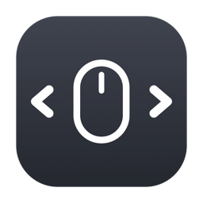

macOS treats a regular mouse like an afterthought. This tiny menu bar app fixes that — scroll, desktop switching, and side buttons that finally behave.
Free and open source (MIT) · macOS 11+ · one permission
Turns the wheel's chunky, line-by-line jumps into a display-synced pixel glide — close to a trackpad.
Mouse scrolls traditionally while the trackpad stays natural — no matter how your system setting is configured.
Hold Ctrl and scroll to move between desktops. No trackpad gesture required.
Remap the side (thumb) buttons to switch desktops, open Mission Control, and more.
git clone https://github.com/halitince7/pc-mouse-for-mac.git cd pc-mouse-for-mac bash scripts/build-app.sh
xcode-select --install.Every feature is a single on/off toggle in the menu bar — no config screens, no per-app rules, no gesture editors. Everything runs in one process and reuses one Accessibility grant, so new features never ask for more.